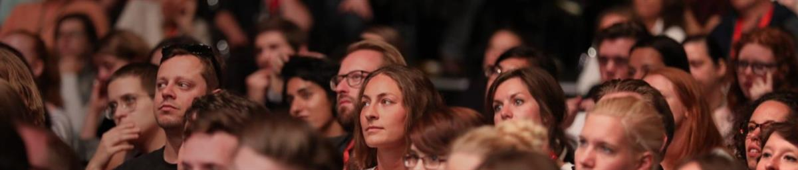
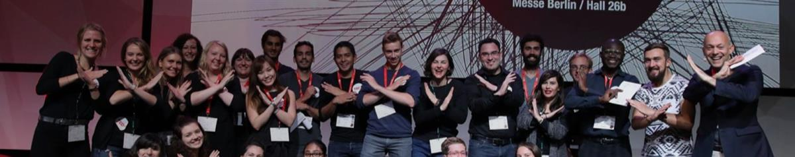
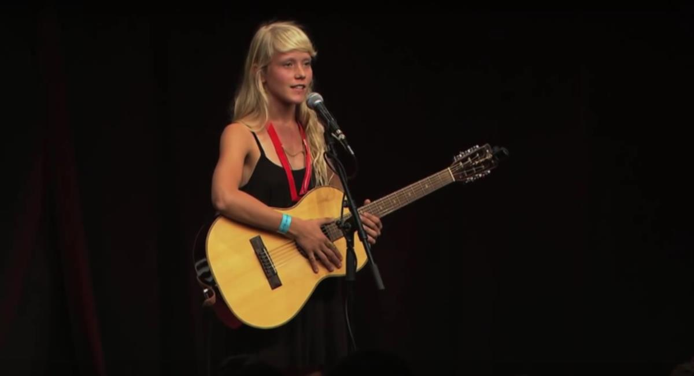

Alice Phoebe Lou is a passionate street musician originally from South Africa. She shares some of her own story and music at TedXBerlin
Open on original site ↗TEDx brings the spirit of TED’s mission of ideas worth spreading to local communities around the globe. TEDx events are organized by curious individuals who seek to discover ideas and spark conversations in their own community. TEDx events include live speakers and recorded TED Talks, and are organized independently under a free license granted by TED.
SOURCE: TEDx Berlin



SOURCE: TEDx Berlin